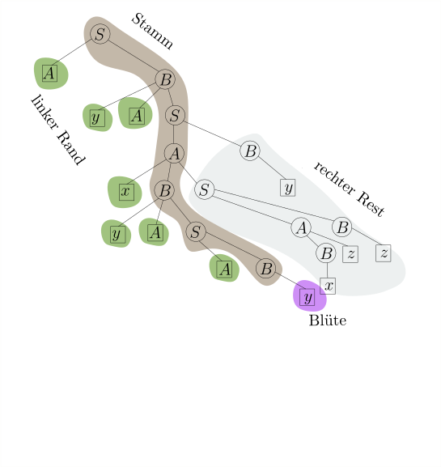

6.8 Linker Rand, Blüten und die DK-Grammatik./wly/06/08-linker-Rand-und-Bluete.wly:2:5
In diesem Teilkapitel werden wir sehen, wie wir für./wly/06/08-linker-Rand-und-Bluete.wly:4:5 eine gültige Wortform ./wly/06/08-linker-Rand-und-Bluete.wly:5:5$\gamma$ den korrekten./wly/06/08-linker-Rand-und-Bluete.wly:5:35 Linksreduktionsschritt./wly/06/08-linker-Rand-und-Bluete.wly:6:5
$$
\begin{align*}
\gamma = \alpha \beta w \rstep{} \alpha X w
\end{align*}
$$
finden. Als erstes müssen wir uns überlegen, wie die./wly/06/08-linker-Rand-und-Bluete.wly:12:5 Front ./wly/06/08-linker-Rand-und-Bluete.wly:13:5$\front(\gamma) = \alpha \beta$ überhaupt./wly/06/08-linker-Rand-und-Bluete.wly:13:42 aussehen kann. Wenn wir uns den Ableitungsbaum von./wly/06/08-linker-Rand-und-Bluete.wly:14:5 ./wly/06/08-linker-Rand-und-Bluete.wly:15:5$\gamma$ ansehen, wird das einigermaßen./wly/06/08-linker-Rand-und-Bluete.wly:15:13 offensichtlich sein. Zur Erinnerung: Zu jeder./wly/06/08-linker-Rand-und-Bluete.wly:16:5 Ableitung ./wly/06/08-linker-Rand-und-Bluete.wly:17:5$S \Step{}^* w \in \Sigma^*$ können wir./wly/06/08-linker-Rand-und-Bluete.wly:17:43 eindeutig einen ./wly/06/08-linker-Rand-und-Bluete.wly:18:5Ableitungsbaum./wly/06/08-linker-Rand-und-Bluete.wly:18:22 zeichnen. Wenn die./wly/06/08-linker-Rand-und-Bluete.wly:18:37 Grammatik eindeutig ist, so hängt auch der Baum nur./wly/06/08-linker-Rand-und-Bluete.wly:19:5 vom Wort ./wly/06/08-linker-Rand-und-Bluete.wly:20:5$w \in L(G)$ ab und nicht von der Ableitung./wly/06/08-linker-Rand-und-Bluete.wly:20:26 ./wly/06/08-linker-Rand-und-Bluete.wly:21:5$S \Step{}^* w$../wly/06/08-linker-Rand-und-Bluete.wly:21:20 Allerdings können wir für./wly/06/08-linker-Rand-und-Bluete.wly:21:20 Zwischenformen ./wly/06/08-linker-Rand-und-Bluete.wly:22:5$S \Step{}^* \gamma \Step{}^* w$ auch./wly/06/08-linker-Rand-und-Bluete.wly:22:52 einen Ableitungsbaum zeichnen, und der unterscheidet./wly/06/08-linker-Rand-und-Bluete.wly:23:5 sich stark, abhängig davon, ob ./wly/06/08-linker-Rand-und-Bluete.wly:24:5$S \Step{}^* \gamma$ ./wly/06/08-linker-Rand-und-Bluete.wly:24:56 eine Rechtsableitung, Linksableitung oder sonst was./wly/06/08-linker-Rand-und-Bluete.wly:25:5 ist. Ich zeige Ihnen jetzt ein Beispiel für eine./wly/06/08-linker-Rand-und-Bluete.wly:26:5 Grammatik und eine Handvoll Ableitungen samt./wly/06/08-linker-Rand-und-Bluete.wly:27:5 Ableitungsbaum../wly/06/08-linker-Rand-und-Bluete.wly:28:5
$$
\begin{align*}
G&: \\
S&\rightarrow AB \\
A&\rightarrow xBS \ | \ Bz \\
B&\rightarrow yAS \ | \ Az \ | \ x \ | \ y \ | \ z
\end{align*}
$$
Es ist zu diesem Zeitpunkt irrelevant, ob ./wly/06/08-linker-Rand-und-Bluete.wly:37:5$G$ ./wly/06/08-linker-Rand-und-Bluete.wly:37:50 eindeutig oder sogar ./wly/06/08-linker-Rand-und-Bluete.wly:38:5$LR(0)$ ist. Ich interessiere./wly/06/08-linker-Rand-und-Bluete.wly:38:33 mich gerade nur für Ableitungsbäume von Wortformen../wly/06/08-linker-Rand-und-Bluete.wly:39:5
 ./public/img/context-free/LR/G-right-derivation.svg
./public/img/context-free/LR/G-right-derivation.svg
 ./public/img/context-free/LR/G-left-derivation.svg
./public/img/context-free/LR/G-left-derivation.svg
 ./public/img/context-free/LR/G-messy-derivation.svg
./public/img/context-free/LR/G-messy-derivation.svg
Fällt Ihnen etwas auf? Schauen Sie sich bitte noch./wly/06/08-linker-Rand-und-Bluete.wly:46:5 ein weiteres Beispiel an für den Ableitungsbaum einer./wly/06/08-linker-Rand-und-Bluete.wly:47:5 in einer gültigen Wortform, also von einer, die in./wly/06/08-linker-Rand-und-Bluete.wly:48:5 einer Rechtsableitung vorkommen kann:./wly/06/08-linker-Rand-und-Bluete.wly:49:5
Warten Sie!./wly/ ./wly/ Scrollen Sie erst weiter, wenn Sie den Baum oben lang./wly/06/08-linker-Rand-und-Bluete.wly:58:9 genug angeschaut haben! Versuchen Sie selbst, die./wly/06/08-linker-Rand-und-Bluete.wly:59:9 spezielle Form dieses Baumes möglichst formal zu./wly/06/08-linker-Rand-und-Bluete.wly:60:9 beschreiben!./wly/06/08-linker-Rand-und-Bluete.wly:61:9
Auflösung../wly/ ./wly/ Hier sehen Sie noch einmal den gleichen Baum, nun./wly/06/08-linker-Rand-und-Bluete.wly:65:9 aber gewisse Teile verschieden umrandet / eingefärbt../wly/06/08-linker-Rand-und-Bluete.wly:66:9
 ./public/img/context-free/LR/G-tree-large-colored.svg
./public/img/context-free/LR/G-tree-large-colored.svg
Sie sehen: links vom Stamm gibt es nur Blätter../wly/06/08-linker-Rand-und-Bluete.wly:73:5 Rechts vom Stamm ist jedes Blatt ein Terminalsymbol../wly/06/08-linker-Rand-und-Bluete.wly:74:5 Wir erkennen auch, was der letzte Ableitungsschritt./wly/06/08-linker-Rand-und-Bluete.wly:75:5 war, der zu diesem Baum geführt hat: die Blüte ist./wly/06/08-linker-Rand-und-Bluete.wly:76:5 hinzugekommen, in diesem Fall also./wly/06/08-linker-Rand-und-Bluete.wly:77:5 ./wly/06/08-linker-Rand-und-Bluete.wly:78:5$A \rightarrow x B S$../wly/06/08-linker-Rand-und-Bluete.wly:78:26 Wir definieren nun./wly/06/08-linker-Rand-und-Bluete.wly:78:26 eingeführten Begriffe formal:./wly/06/08-linker-Rand-und-Bluete.wly:79:5
Definition / Beobachtung 6.8.1 (Stamm, linker Rand, Blüte, Front, rechter Rest)./wly/06/08-linker-Rand-und-Bluete.wly:81:6 ./wly/06/08-linker-Rand-und-Bluete.wly:83:59 Sei ./wly/06/08-linker-Rand-und-Bluete.wly:84:9$S \Step{}^* \gamma$ eine Rechtsableitung,./wly/06/08-linker-Rand-und-Bluete.wly:84:33 ./wly/06/08-linker-Rand-und-Bluete.wly:85:9$\gamma$ also eine gültige Wortform, und ./wly/06/08-linker-Rand-und-Bluete.wly:85:17$\mathcal{T}$ ./wly/06/08-linker-Rand-und-Bluete.wly:85:63 der Ableitungsbaum von ./wly/06/08-linker-Rand-und-Bluete.wly:86:9$\gamma$../wly/06/08-linker-Rand-und-Bluete.wly:86:40 Der ./wly/06/08-linker-Rand-und-Bluete.wly:86:40Stamm./wly/06/08-linker-Rand-und-Bluete.wly:86:47 ist der./wly/06/08-linker-Rand-und-Bluete.wly:86:53 Pfad von der Wurzel zu jenem inneren Knoten ./wly/06/08-linker-Rand-und-Bluete.wly:87:9$u$,./wly/06/08-linker-Rand-und-Bluete.wly:87:56 der./wly/06/08-linker-Rand-und-Bluete.wly:87:56 von allen inneren Knoten, deren Kinder allesamt./wly/06/08-linker-Rand-und-Bluete.wly:88:9 Blätter sind, am weistesten links steht. Die Kinder./wly/06/08-linker-Rand-und-Bluete.wly:89:9 von ./wly/06/08-linker-Rand-und-Bluete.wly:90:9$u$,./wly/06/08-linker-Rand-und-Bluete.wly:90:16 per Definition alles Blätter, sind die./wly/06/08-linker-Rand-und-Bluete.wly:90:16 ./wly/06/08-linker-Rand-und-Bluete.wly:91:9Blüte./wly/06/08-linker-Rand-und-Bluete.wly:91:10../wly/06/08-linker-Rand-und-Bluete.wly:91:16 Die Menge der Knoten, die einen Stammknoten./wly/06/08-linker-Rand-und-Bluete.wly:91:16 als rechtes Geschwister haben, heißt der ./wly/06/08-linker-Rand-und-Bluete.wly:92:9linke Rand./wly/06/08-linker-Rand-und-Bluete.wly:92:51../wly/06/08-linker-Rand-und-Bluete.wly:92:62 ./wly/06/08-linker-Rand-und-Bluete.wly:92:62 Jeder Knoten ./wly/06/08-linker-Rand-und-Bluete.wly:93:9$v$ im linken Rand muss ein Blatt sein,./wly/06/08-linker-Rand-und-Bluete.wly:93:25 ansonsten stünde er ja weiter links als ./wly/06/08-linker-Rand-und-Bluete.wly:94:9$u$;./wly/06/08-linker-Rand-und-Bluete.wly:94:52 die./wly/06/08-linker-Rand-und-Bluete.wly:94:52 Menge der rechten Geschwisterkinder von Stammknoten./wly/06/08-linker-Rand-und-Bluete.wly:95:9 sowie deren Nachkommen heißt der ./wly/06/08-linker-Rand-und-Bluete.wly:96:9rechte Rand./wly/06/08-linker-Rand-und-Bluete.wly:96:43../wly/06/08-linker-Rand-und-Bluete.wly:96:55 Im./wly/06/08-linker-Rand-und-Bluete.wly:96:55 rechten Rest ist jedes Blatt ein Terminalsymbol,./wly/06/08-linker-Rand-und-Bluete.wly:97:9 ansonsten wäre es keine Rechtsableitung. Die./wly/06/08-linker-Rand-und-Bluete.wly:98:9 Beschriftung der Knoten im linken Rand ergibt eine./wly/06/08-linker-Rand-und-Bluete.wly:99:9 Wortform ./wly/06/08-linker-Rand-und-Bluete.wly:100:9$\alpha$;./wly/06/08-linker-Rand-und-Bluete.wly:100:26 die Blüte ergibt ./wly/06/08-linker-Rand-und-Bluete.wly:100:26$\beta$../wly/06/08-linker-Rand-und-Bluete.wly:100:52 Die./wly/06/08-linker-Rand-und-Bluete.wly:100:52 Blätter im rechten Rand sind ausschließlich mit./wly/06/08-linker-Rand-und-Bluete.wly:101:9 Terminalen beschriftet und ergeben ein Wort./wly/06/08-linker-Rand-und-Bluete.wly:102:9 ./wly/06/08-linker-Rand-und-Bluete.wly:103:9$w \in \Sigma^*$ . Der ganze Baum stellt also eine./wly/06/08-linker-Rand-und-Bluete.wly:103:25 Rechtsableitung./wly/06/08-linker-Rand-und-Bluete.wly:104:9
$$
\begin{align*}
S \Step{R}^* \alpha \beta w
\end{align*}
$$
dar. Die Wortform ./wly/06/08-linker-Rand-und-Bluete.wly:110:9$\alpha\beta$,./wly/06/08-linker-Rand-und-Bluete.wly:110:40 also linker Rand./wly/06/08-linker-Rand-und-Bluete.wly:110:40 plus Blüte, nennen wir die ./wly/06/08-linker-Rand-und-Bluete.wly:111:9Front./wly/06/08-linker-Rand-und-Bluete.wly:111:37 von ./wly/06/08-linker-Rand-und-Bluete.wly:111:43$\mathcal{T}$ ./wly/06/08-linker-Rand-und-Bluete.wly:111:61 und schreiben sie als ./wly/06/08-linker-Rand-und-Bluete.wly:112:9$\front(\mathcal{T})$../wly/06/08-linker-Rand-und-Bluete.wly:112:52 Wir./wly/06/08-linker-Rand-und-Bluete.wly:112:52 sagen auch, dass ./wly/06/08-linker-Rand-und-Bluete.wly:113:9$\beta$ ./wly/06/08-linker-Rand-und-Bluete.wly:113:33eine Blüte von ./wly/06/08-linker-Rand-und-Bluete.wly:113:35$\gamma$ ./wly/06/08-linker-Rand-und-Bluete.wly:113:59 und ./wly/06/08-linker-Rand-und-Bluete.wly:114:9$\alpha\beta$ die ./wly/06/08-linker-Rand-und-Bluete.wly:114:26Front./wly/06/08-linker-Rand-und-Bluete.wly:114:32 von ./wly/06/08-linker-Rand-und-Bluete.wly:114:38$\gamma$ ist, ohne./wly/06/08-linker-Rand-und-Bluete.wly:114:51 über den Ableitungsbaum ./wly/06/08-linker-Rand-und-Bluete.wly:115:9$\mathcal{T}$ selbst zu./wly/06/08-linker-Rand-und-Bluete.wly:115:46 reden. Hierbei ist zu beachten, dass in einer./wly/06/08-linker-Rand-und-Bluete.wly:116:9 mehrdeutigen Grammatik eine gültige Wortform mehrere./wly/06/08-linker-Rand-und-Bluete.wly:117:9 Ableitungsbäume und somit mehrere Blüten haben kann,./wly/06/08-linker-Rand-und-Bluete.wly:118:9 die Unterteilung ./wly/06/08-linker-Rand-und-Bluete.wly:119:9$\gamma = \alpha\beta w$ also nicht./wly/06/08-linker-Rand-und-Bluete.wly:119:50 eindeutig ist. Für eindeutige Grammatiken ist die./wly/06/08-linker-Rand-und-Bluete.wly:120:9 Unterteilung aber eindeutig. Sei weiterhin ./wly/06/08-linker-Rand-und-Bluete.wly:121:9$A$ die./wly/06/08-linker-Rand-und-Bluete.wly:121:55 Beschriftung des Elternknoten der Blüte./wly/06/08-linker-Rand-und-Bluete.wly:122:9 (notwenigerweise ein Nichtterminal; Terminale haben./wly/06/08-linker-Rand-und-Bluete.wly:123:9 keine Kinder). Dann ist ./wly/06/08-linker-Rand-und-Bluete.wly:124:9$A \rightarrow \beta$ eine./wly/06/08-linker-Rand-und-Bluete.wly:124:54 Produktion in der Grammatik und ./wly/06/08-linker-Rand-und-Bluete.wly:125:9$\alpha A w$ eine./wly/06/08-linker-Rand-und-Bluete.wly:125:53 gültige Wortform; wir erhalten den Ableitungsbaum von./wly/06/08-linker-Rand-und-Bluete.wly:126:9 ./wly/06/08-linker-Rand-und-Bluete.wly:127:9$\alpha A w$,./wly/06/08-linker-Rand-und-Bluete.wly:127:21 indem wir die Blüte von ./wly/06/08-linker-Rand-und-Bluete.wly:127:21$\mathcal{T}$ ./wly/06/08-linker-Rand-und-Bluete.wly:127:60 entfernen. Wir schließen, dass./wly/06/08-linker-Rand-und-Bluete.wly:128:9
$$
\begin{align*}
\alpha \beta w \rstep{} \alpha A w
\end{align*}
$$
ein korrekter Linksreduktionsschritt ist../wly/06/08-linker-Rand-und-Bluete.wly:134:9
Wir können also, ausgehend von der Wortform ./wly/06/08-linker-Rand-und-Bluete.wly:136:5$\gamma$,./wly/06/08-linker-Rand-und-Bluete.wly:136:57 ./wly/06/08-linker-Rand-und-Bluete.wly:136:57 eine Linksreduktion ./wly/06/08-linker-Rand-und-Bluete.wly:137:5$\gamma \rstep{}^* S$ finden,./wly/06/08-linker-Rand-und-Bluete.wly:137:46 indem wir den Ableitungsbaum von ./wly/06/08-linker-Rand-und-Bluete.wly:138:5$\gamma$ zeichnen./wly/06/08-linker-Rand-und-Bluete.wly:138:46 und immer wieder die Blüte abschneiden:./wly/06/08-linker-Rand-und-Bluete.wly:139:5
 ./public/img/context-free/LR/tree-destruction/01.svg
./public/img/context-free/LR/tree-destruction/01.svg
 ./public/img/context-free/LR/tree-destruction/02.svg
./public/img/context-free/LR/tree-destruction/02.svg
 ./public/img/context-free/LR/tree-destruction/03.svg
./public/img/context-free/LR/tree-destruction/03.svg
 ./public/img/context-free/LR/tree-destruction/04.svg
./public/img/context-free/LR/tree-destruction/04.svg
 ./public/img/context-free/LR/tree-destruction/05.svg
./public/img/context-free/LR/tree-destruction/05.svg
 ./public/img/context-free/LR/tree-destruction/06.svg
./public/img/context-free/LR/tree-destruction/06.svg
./public/img/context-free/LR/tree-destruction/07.svg
 ./public/img/context-free/LR/tree-destruction/08.svg
./public/img/context-free/LR/tree-destruction/08.svg
./public/img/context-free/LR/tree-destruction/09.svg
 ./public/img/context-free/LR/tree-destruction/10.svg
./public/img/context-free/LR/tree-destruction/10.svg
Um für eine Wortform ./wly/06/08-linker-Rand-und-Bluete.wly:153:5$\gamma$ den korrekten./wly/06/08-linker-Rand-und-Bluete.wly:153:34 Reduktionsschritt zu finden, reicht es also aus,./wly/06/08-linker-Rand-und-Bluete.wly:154:5 linken Rand und Blüte zu bestimmen, also ./wly/06/08-linker-Rand-und-Bluete.wly:155:5$\alpha$ und./wly/06/08-linker-Rand-und-Bluete.wly:155:54 ./wly/06/08-linker-Rand-und-Bluete.wly:156:5$\beta$,./wly/06/08-linker-Rand-und-Bluete.wly:156:12 so dass ./wly/06/08-linker-Rand-und-Bluete.wly:156:12$\gamma = \alpha\beta w$ und./wly/06/08-linker-Rand-und-Bluete.wly:156:46 ./wly/06/08-linker-Rand-und-Bluete.wly:157:5$\alpha \beta w \rstep{} \alpha A w$ korrekt ist ( ./wly/06/08-linker-Rand-und-Bluete.wly:157:41$A$ ./wly/06/08-linker-Rand-und-Bluete.wly:157:59 steht hier für das Nichtterminal, mit dem der./wly/06/08-linker-Rand-und-Bluete.wly:158:5 Elternknoten der Blüte beschriftet ist). Linken Rand./wly/06/08-linker-Rand-und-Bluete.wly:159:5 und Blüte zu finden scheint keine leichte Aufgabe zu./wly/06/08-linker-Rand-und-Bluete.wly:160:5 sein: schließlich müssen wir dafür doch den./wly/06/08-linker-Rand-und-Bluete.wly:161:5 Ableitungsbaum von ./wly/06/08-linker-Rand-und-Bluete.wly:162:5$\gamma$ bilden, was selbst wieder./wly/06/08-linker-Rand-und-Bluete.wly:162:32 eine Parsing-Aufgabe ist??? An dieser Stelle zeigt./wly/06/08-linker-Rand-und-Bluete.wly:163:5 sich die Genialität des DK-Ansatzes: der./wly/06/08-linker-Rand-und-Bluete.wly:164:5 Ableitungsbaum von ./wly/06/08-linker-Rand-und-Bluete.wly:165:5$\gamma$ kann beliebig./wly/06/08-linker-Rand-und-Bluete.wly:165:32 verschachtelt sein, aber Stamm, linker Rand und Blüte./wly/06/08-linker-Rand-und-Bluete.wly:166:5 haben zusammen eine einfache, beinahe linear anmutende./wly/06/08-linker-Rand-und-Bluete.wly:167:5 Struktur. Schematisch:./wly/06/08-linker-Rand-und-Bluete.wly:168:5
 ./public/img/context-free/LR/schema-linker-rand-bluete-stamm.svg
./public/img/context-free/LR/schema-linker-rand-bluete-stamm.svg
Die Aussage "Stamm, linker Rand und Blüte haben eine./wly/06/08-linker-Rand-und-Bluete.wly:175:5 einfache Struktur" können wir formalisieren../wly/06/08-linker-Rand-und-Bluete.wly:176:5
Definition 6.8.2./wly/06/08-linker-Rand-und-Bluete.wly:178:6 ./wly/06/08-linker-Rand-und-Bluete.wly:178:25 Für eine kontextfreie Grammatik ./wly/06/08-linker-Rand-und-Bluete.wly:179:9$G$ definieren wir./wly/06/08-linker-Rand-und-Bluete.wly:179:44 die Sprache ./wly/06/08-linker-Rand-und-Bluete.wly:180:9$\Front(G) \subseteq (\Sigma \cup N)^*$:./wly/06/08-linker-Rand-und-Bluete.wly:180:60
$$
\begin{align*}
\Front(G) := \{\front(\mathcal{T}) \ | \ \mathcal{T}
\textnormal{ ist der Ableitungsbaum einer Rechtsableitung }
S \Step{R}^* \gamma \}
\end{align*}
$$
alternativ./wly/06/08-linker-Rand-und-Bluete.wly:188:9
$$
\begin{align*}
\Front(G) := \{\alpha \beta \ | \ S \Steps{R} \alpha X w
\Step{R} \alpha \beta w \}
\end{align*}
$$
also die Menge aller Wortformen, die Front einer./wly/06/08-linker-Rand-und-Bluete.wly:195:9 gültigen Wortform sind../wly/06/08-linker-Rand-und-Bluete.wly:196:9
Lemma 6.8.3./wly/06/08-linker-Rand-und-Bluete.wly:198:6 ./wly/06/08-linker-Rand-und-Bluete.wly:198:20 Die Sprache ./wly/06/08-linker-Rand-und-Bluete.wly:199:9$\Front(G)$ ist regulär. Insbesondere./wly/06/08-linker-Rand-und-Bluete.wly:199:32 gibt es eine erweitert reguläre Grammatik ./wly/06/08-linker-Rand-und-Bluete.wly:200:9$\hat{G}$ ./wly/06/08-linker-Rand-und-Bluete.wly:200:60 für ./wly/06/08-linker-Rand-und-Bluete.wly:201:9$\Front(G)$,./wly/06/08-linker-Rand-und-Bluete.wly:201:24 so dass die Blüte genau die im./wly/06/08-linker-Rand-und-Bluete.wly:201:24 letzen Ableitungsschritt erzeugten Terminalsymbole./wly/06/08-linker-Rand-und-Bluete.wly:202:9 sind../wly/06/08-linker-Rand-und-Bluete.wly:203:9
Hier ist etwas Mentalgymnastik vonnöten: aus Sicht./wly/06/08-linker-Rand-und-Bluete.wly:205:5 der Sprache ./wly/06/08-linker-Rand-und-Bluete.wly:206:5$\Front(G)$ sind ./wly/06/08-linker-Rand-und-Bluete.wly:206:28$\Sigma \cup N$ ./wly/06/08-linker-Rand-und-Bluete.wly:206:49 ./wly/06/08-linker-Rand-und-Bluete.wly:207:5Terminalsymbole./wly/06/08-linker-Rand-und-Bluete.wly:207:6../wly/06/08-linker-Rand-und-Bluete.wly:207:22 Sie können ja schließlich in den./wly/06/08-linker-Rand-und-Bluete.wly:207:22 Wörtern der Sprache auftauchen. Die Grammatik./wly/06/08-linker-Rand-und-Bluete.wly:208:5 ./wly/06/08-linker-Rand-und-Bluete.wly:209:5$\hat{G}$ hat also die Terminalsymbole./wly/06/08-linker-Rand-und-Bluete.wly:209:14 ./wly/06/08-linker-Rand-und-Bluete.wly:210:5$\Sigma \cup N$../wly/06/08-linker-Rand-und-Bluete.wly:210:20 Darüberhinaus hat sie die./wly/06/08-linker-Rand-und-Bluete.wly:210:20 Nichtterminale./wly/06/08-linker-Rand-und-Bluete.wly:211:5 ./wly/06/08-linker-Rand-und-Bluete.wly:212:5$\hat{N} := \{ \hat{X} \ | \ X \in N\}$,./wly/06/08-linker-Rand-und-Bluete.wly:212:44 also für./wly/06/08-linker-Rand-und-Bluete.wly:212:44 jedes Nichtterminal ./wly/06/08-linker-Rand-und-Bluete.wly:213:5$X$ von ./wly/06/08-linker-Rand-und-Bluete.wly:213:28$G$ ein./wly/06/08-linker-Rand-und-Bluete.wly:213:36 Meta-Nichtterminal ./wly/06/08-linker-Rand-und-Bluete.wly:214:5$\hat{X}$../wly/06/08-linker-Rand-und-Bluete.wly:214:33 Das ./wly/06/08-linker-Rand-und-Bluete.wly:214:33$X \in N$ ./wly/06/08-linker-Rand-und-Bluete.wly:214:48 entspricht dem ./wly/06/08-linker-Rand-und-Bluete.wly:215:5$\boxed{X}$ in den obigen Bäumen, wo./wly/06/08-linker-Rand-und-Bluete.wly:215:31 also ./wly/06/08-linker-Rand-und-Bluete.wly:216:5$N$ als Blatt vorkommt; das ./wly/06/08-linker-Rand-und-Bluete.wly:216:13$\hat{X} \in \hat{N}$ ./wly/06/08-linker-Rand-und-Bluete.wly:216:59 entspricht dem ./wly/06/08-linker-Rand-und-Bluete.wly:217:5./public/img/context-free/LR/circle-X.svg, also wo ./wly/06/08-linker-Rand-und-Bluete.wly:219:5$W$ als innerer Knoten vorkommt. Bevor ich./wly/06/08-linker-Rand-und-Bluete.wly:219:18 ./wly/06/08-linker-Rand-und-Bluete.wly:220:5$\hat{G}$ formal definiere, zeige ich den obigen./wly/06/08-linker-Rand-und-Bluete.wly:220:14 Ableitungsbaum (ohne rechten Rand, weil der ja bei./wly/06/08-linker-Rand-und-Bluete.wly:221:5 ./wly/06/08-linker-Rand-und-Bluete.wly:222:5$\front(G)$ eh fehlt) und annotiere jeden Knoten auf./wly/06/08-linker-Rand-und-Bluete.wly:222:16 dem Stamm mit der entsprechenden ./wly/06/08-linker-Rand-und-Bluete.wly:223:5$\hat{G}$ ./wly/06/08-linker-Rand-und-Bluete.wly:223:47 -Produktion../wly/06/08-linker-Rand-und-Bluete.wly:224:5
 ./public/img/context-free/LR/hat-G-derivation.svg
./public/img/context-free/LR/hat-G-derivation.svg
Die oben gezeigten ./wly/06/08-linker-Rand-und-Bluete.wly:231:5$\hat{G}$-Produktionen./wly/06/08-linker-Rand-und-Bluete.wly:231:33 sind./wly/06/08-linker-Rand-und-Bluete.wly:231:33 ./wly/06/08-linker-Rand-und-Bluete.wly:232:5verallgemeinert regulär./wly/06/08-linker-Rand-und-Bluete.wly:232:6 und nicht im eigentlichen./wly/06/08-linker-Rand-und-Bluete.wly:232:30 Sinne regulär, wie zum Beispiel die Produktion./wly/06/08-linker-Rand-und-Bluete.wly:233:5 ./wly/06/08-linker-Rand-und-Bluete.wly:234:5$\hat{B} \rightarrow yA \hat{S}$,./wly/06/08-linker-Rand-und-Bluete.wly:234:37 die auf der rechten./wly/06/08-linker-Rand-und-Bluete.wly:234:37 Seite zwei Terminalsymbole hat (beachten Sie: ./wly/06/08-linker-Rand-und-Bluete.wly:235:5$A$ ist./wly/06/08-linker-Rand-und-Bluete.wly:235:54 ein Terminal aus der Sicht von ./wly/06/08-linker-Rand-und-Bluete.wly:236:5$\hat{G}$)../wly/06/08-linker-Rand-und-Bluete.wly:236:45 Wir./wly/06/08-linker-Rand-und-Bluete.wly:236:45 schreiben ./wly/06/08-linker-Rand-und-Bluete.wly:237:5$\hat{G}$ um in eine reguläre Grammatik,./wly/06/08-linker-Rand-und-Bluete.wly:237:24 indem wir Zwischen-Nichtterminale einführen; diese./wly/06/08-linker-Rand-und-Bluete.wly:238:5 entsprechen dann auch den Zuständen des dazugehörigen./wly/06/08-linker-Rand-und-Bluete.wly:239:5 nichtdeterministischen Automaten:./wly/06/08-linker-Rand-und-Bluete.wly:240:5
Definition 6.8.4./wly/06/08-linker-Rand-und-Bluete.wly:242:6 ./wly/06/08-linker-Rand-und-Bluete.wly:242:25 Sei ./wly/06/08-linker-Rand-und-Bluete.wly:243:9$G = (\Sigma, N, S, P)$ eine kontextfreie./wly/06/08-linker-Rand-und-Bluete.wly:243:36 Grammatik. Die Front-Grammatik oder DK-Grammatik von./wly/06/08-linker-Rand-und-Bluete.wly:244:9 ./wly/06/08-linker-Rand-und-Bluete.wly:245:9$G$ ist die ./wly/06/08-linker-Rand-und-Bluete.wly:245:12erweitert reguläre./wly/06/08-linker-Rand-und-Bluete.wly:245:22 Grammatik./wly/06/08-linker-Rand-und-Bluete.wly:245:41 ./wly/06/08-linker-Rand-und-Bluete.wly:246:9$\hat{G} = (\Sigma \cup N, \hat{N}, \hat{S}, \hat{P})$ ./wly/06/08-linker-Rand-und-Bluete.wly:247:18 mit ./wly/06/08-linker-Rand-und-Bluete.wly:248:9$\hat{N} := \{\hat{X} \ | \ X \in N\}$,./wly/06/08-linker-Rand-und-Bluete.wly:248:51 wobei./wly/06/08-linker-Rand-und-Bluete.wly:248:51 ./wly/06/08-linker-Rand-und-Bluete.wly:249:9$\hat{P}$ für jede ./wly/06/08-linker-Rand-und-Bluete.wly:249:18$G$-Produktion./wly/06/08-linker-Rand-und-Bluete.wly:249:31
$$
\begin{align*}
A \rightarrow w_0 A_1 w_1 A_2 w_2 \dots w_{k-1} A_k w_k
\end{align*}
$$
mit ./wly/06/08-linker-Rand-und-Bluete.wly:255:9$w_i \in \Sigma^*$ die Produktionen./wly/06/08-linker-Rand-und-Bluete.wly:255:31
$$
\begin{align*}
\hat{A}&\rightarrow w_0 \hat{A}_1 \\
\hat{A}&\rightarrow w_0 A_1 w_1 \hat{A}_2 \\
&\vdots \\
\hat{A}&\rightarrow w_0 A_1 w_1 A_2 w_2 \dots A_{k-1} w_{k-1} \hat{A}_k \\
\hat{A}&\rightarrow w_0 A_1 w_1 A_2 w_2 \dots w_{k-1} A_k w_k
\end{align*}
$$
besitzt../wly/06/08-linker-Rand-und-Bluete.wly:265:9
Beobachtung 6.8.5./wly/06/08-linker-Rand-und-Bluete.wly:267:6 ./wly/06/08-linker-Rand-und-Bluete.wly:267:26 ./wly/06/08-linker-Rand-und-Bluete.wly:268:9$\hat{G}$ erzeugt die Sprache ./wly/06/08-linker-Rand-und-Bluete.wly:268:18$\Front(G)$../wly/06/08-linker-Rand-und-Bluete.wly:268:50
Beispiel 6.8.6./wly/06/08-linker-Rand-und-Bluete.wly:270:6 ./wly/06/08-linker-Rand-und-Bluete.wly:270:23 Für unsere Grammatik ./wly/06/08-linker-Rand-und-Bluete.wly:271:9$G$ oben ergeben sich folgende./wly/06/08-linker-Rand-und-Bluete.wly:271:33 Produktionen ./wly/06/08-linker-Rand-und-Bluete.wly:272:9$\hat{P}$ in ./wly/06/08-linker-Rand-und-Bluete.wly:272:31$\hat{G}$:./wly/06/08-linker-Rand-und-Bluete.wly:272:44
$$
\begin{align*}
\begin{array}{l|l}
\textnormal{Produktion in $G$}
&
\textnormal{Produktion in $\hat{G}$} \\
&{\dk{S}} \rightarrow \dk{A}\\
S \rightarrow AB&{\dk{S}} \rightarrow \dkt{A} \dk{B}\\
&{\dk{S}} \rightarrow \dkt{AB} \\ \hline
%
&{\dk{A}} \rightarrow \dkt{x} \dk{B}\\
A \rightarrow xBS&{\dk{A}} \rightarrow \dkt{x B} \dk{S}\\
&{\dk{A}} \rightarrow \dkt{x B S}\\ \hline
%
A \rightarrow Bz&{\dk{A}} \rightarrow \dk{B}\\
&{\dk{A}} \rightarrow \dkt{Bz} \\ \hline
%
&\dk{B} \rightarrow \dkt{y} \dk{A}\\
B \rightarrow y A S&\dk{B} \rightarrow \dkt{y A} \dk{S} \\
&\dk{B} \rightarrow \dkt{y A S} \\ \hline
%
&\dk{B} \rightarrow \dk{A} \\
B \rightarrow Az&\dk{B} \rightarrow \dkt{Az} \\ \hline
%
B \rightarrow x&\dk{B} \rightarrow \dkt{x} \\
B \rightarrow y&\dk{B} \rightarrow \dkt{y} \\
B \rightarrow z&\dk{B} \rightarrow \dkt{z} \\
\end{array}
\end{align*}
$$
Nochmals: Produktionen wie./wly/06/08-linker-Rand-und-Bluete.wly:303:5 ./wly/06/08-linker-Rand-und-Bluete.wly:304:5$\dk{B} \rightarrow \dkt{y A} \dk{S}$ sind erweitert./wly/06/08-linker-Rand-und-Bluete.wly:304:42 regulär weil ./wly/06/08-linker-Rand-und-Bluete.wly:305:5$\dkt{y}$ und ./wly/06/08-linker-Rand-und-Bluete.wly:305:27$\dkt{A}$ aus Sicht von./wly/06/08-linker-Rand-und-Bluete.wly:305:41 ./wly/06/08-linker-Rand-und-Bluete.wly:306:5$\hat{G}$ beides Terminalsymbole sind. Wir können nun./wly/06/08-linker-Rand-und-Bluete.wly:306:14 unseren ./wly/06/08-linker-Rand-und-Bluete.wly:307:5$LR(0)$-Parser./wly/06/08-linker-Rand-und-Bluete.wly:307:20 beschreiben:./wly/06/08-linker-Rand-und-Bluete.wly:307:20
Algorithmus 6.8.7 - Der ./wly/06/08-linker-Rand-und-Bluete.wly:309:6$LR(0)$-Parser../wly/06/08-linker-Rand-und-Bluete.wly:311:23 Starte mit einem leerem./wly/06/08-linker-Rand-und-Bluete.wly:311:32 Stack. Sei ./wly/06/08-linker-Rand-und-Bluete.wly:312:9$\gamma$ der Inhalt des Stacks zu einem./wly/06/08-linker-Rand-und-Bluete.wly:312:28 Zeitpunkt../wly/06/08-linker-Rand-und-Bluete.wly:313:9
-
Wenn ./wly/06/08-linker-Rand-und-Bluete.wly:317:17$\gamma \in \Front(G)$,./wly/06/08-linker-Rand-und-Bluete.wly:317:44 dann betrachte die./wly/06/08-linker-Rand-und-Bluete.wly:317:44 letzte angewandte ./wly/06/08-linker-Rand-und-Bluete.wly:318:17$\hat{G}$ -Produktion./wly/06/08-linker-Rand-und-Bluete.wly:318:44 ./wly/06/08-linker-Rand-und-Bluete.wly:319:17$\hat{X} \rightarrow \beta$ und schreibe./wly/06/08-linker-Rand-und-Bluete.wly:319:44 ./wly/06/08-linker-Rand-und-Bluete.wly:320:17$\gamma = \alpha\beta$../wly/06/08-linker-Rand-und-Bluete.wly:320:39 Wende die ./wly/06/08-linker-Rand-und-Bluete.wly:320:39$G$-Produktion./wly/06/08-linker-Rand-und-Bluete.wly:320:54 ./wly/06/08-linker-Rand-und-Bluete.wly:320:54 ./wly/06/08-linker-Rand-und-Bluete.wly:321:17$X \rightarrow \beta$ rückwärts an, reduziere also./wly/06/08-linker-Rand-und-Bluete.wly:321:38
$$ \begin{align*} \alpha \beta \rstep{} \alpha X \end{align*} $$Konkret: lösche ./wly/06/08-linker-Rand-und-Bluete.wly:327:17$\beta$ vom Stack und ersetze es./wly/06/08-linker-Rand-und-Bluete.wly:327:40 durch ./wly/06/08-linker-Rand-und-Bluete.wly:328:17$A$../wly/06/08-linker-Rand-und-Bluete.wly:328:26
-
Falls ./wly/06/08-linker-Rand-und-Bluete.wly:331:17$\gamma \not \in \Front(G)$,./wly/06/08-linker-Rand-und-Bluete.wly:331:50 lies das nächste./wly/06/08-linker-Rand-und-Bluete.wly:331:50 Eingabezeichen und lege es auf den Stack../wly/06/08-linker-Rand-und-Bluete.wly:332:17
Der Parser endet, wenn weder Schritt 1 noch Schritt 2./wly/06/08-linker-Rand-und-Bluete.wly:334:9 möglich sind; wenn zu diesem Zeitpunkt nur noch ./wly/06/08-linker-Rand-und-Bluete.wly:335:9$S$ ./wly/06/08-linker-Rand-und-Bluete.wly:335:60 auf dem Stack liegt, akzeptiert er, andernfalls lehnt./wly/06/08-linker-Rand-und-Bluete.wly:336:9 er das Eingabewort ab../wly/06/08-linker-Rand-und-Bluete.wly:337:9
Theorem 6.8.8./wly/06/08-linker-Rand-und-Bluete.wly:339:6 ./wly/06/08-linker-Rand-und-Bluete.wly:339:22 Wenn der ./wly/06/08-linker-Rand-und-Bluete.wly:340:9$LR(0)$-Parser./wly/06/08-linker-Rand-und-Bluete.wly:340:25 akzeptiert, dann hat er eine./wly/06/08-linker-Rand-und-Bluete.wly:340:25 Linksreduktion ./wly/06/08-linker-Rand-und-Bluete.wly:341:9$w \rstep{}^* S$ und somit eine./wly/06/08-linker-Rand-und-Bluete.wly:341:40 Rechtsableitung konstruiert; es gilt also./wly/06/08-linker-Rand-und-Bluete.wly:342:9 ./wly/06/08-linker-Rand-und-Bluete.wly:343:9$w \in L(G)$../wly/06/08-linker-Rand-und-Bluete.wly:343:21 Wenn umgekehrt ./wly/06/08-linker-Rand-und-Bluete.wly:343:21$w \in L(G)$ gilt und ./wly/06/08-linker-Rand-und-Bluete.wly:343:50$G$ ./wly/06/08-linker-Rand-und-Bluete.wly:343:63 die ./wly/06/08-linker-Rand-und-Bluete.wly:344:9$LR(0)$-Bedingung./wly/06/08-linker-Rand-und-Bluete.wly:344:20 erfüllt, dann findet der Parser./wly/06/08-linker-Rand-und-Bluete.wly:344:20 die Rechtsableitung ./wly/06/08-linker-Rand-und-Bluete.wly:345:9$S \Step{}^* w$,./wly/06/08-linker-Rand-und-Bluete.wly:345:44
Beweis../wly/ ./wly/ Der erste Teil der Bedeutung ist einfach zu sehen../wly/06/08-linker-Rand-und-Bluete.wly:348:9 Jeder Reduktionsschritt ist ein./wly/06/08-linker-Rand-und-Bluete.wly:349:9 Linksreduktionsschritt, und wenn man Ende ./wly/06/08-linker-Rand-und-Bluete.wly:350:9$S$ steht,./wly/06/08-linker-Rand-und-Bluete.wly:350:54 waren es auch alles ./wly/06/08-linker-Rand-und-Bluete.wly:351:9korrekte./wly/06/08-linker-Rand-und-Bluete.wly:351:30 ./wly/06/08-linker-Rand-und-Bluete.wly:351:39 Linksreduktionsschritte. Der zweite Teil ist./wly/06/08-linker-Rand-und-Bluete.wly:352:9 schwieriger. Wir nehmen also an, dass ./wly/06/08-linker-Rand-und-Bluete.wly:353:9$G$ eine./wly/06/08-linker-Rand-und-Bluete.wly:353:50 LR(0)-Grammatik ist. Da ./wly/06/08-linker-Rand-und-Bluete.wly:354:9$G$ eindeutig ist, hat jede./wly/06/08-linker-Rand-und-Bluete.wly:354:36 gültige Wortform ./wly/06/08-linker-Rand-und-Bluete.wly:355:9$\gamma$ eine eindeutige./wly/06/08-linker-Rand-und-Bluete.wly:355:34 Rechtsableitung und einen dazugehörigen Ableitungsbaum./wly/06/08-linker-Rand-und-Bluete.wly:356:9 ./wly/06/08-linker-Rand-und-Bluete.wly:357:9$\mathcal{T}$;./wly/06/08-linker-Rand-und-Bluete.wly:357:22 somit ist./wly/06/08-linker-Rand-und-Bluete.wly:357:22 ./wly/06/08-linker-Rand-und-Bluete.wly:358:9$\front(\gamma) := \front(\mathcal{T})$ eindeutig./wly/06/08-linker-Rand-und-Bluete.wly:358:48 bestimmt. Beachten Sie, dass rechts von./wly/06/08-linker-Rand-und-Bluete.wly:359:9 ./wly/06/08-linker-Rand-und-Bluete.wly:360:9$\front(\gamma)$ nur Terminalsymbole folgen../wly/06/08-linker-Rand-und-Bluete.wly:360:25 Betrachten wir einen Zeitpunkt während des./wly/06/08-linker-Rand-und-Bluete.wly:361:9 Parsing-Prozesses. Sei ./wly/06/08-linker-Rand-und-Bluete.wly:362:9$\gamma$ der Stackinhalt und./wly/06/08-linker-Rand-und-Bluete.wly:362:40 ./wly/06/08-linker-Rand-und-Bluete.wly:363:9$w$ der ungelesene Teil des Eingabewortes. Wir werden./wly/06/08-linker-Rand-und-Bluete.wly:363:12 beweisen, dass zu jedem Zeitpunkt folgende Invariante./wly/06/08-linker-Rand-und-Bluete.wly:364:9 gilt:./wly/06/08-linker-Rand-und-Bluete.wly:365:9
Behauptung../wly/06/08-linker-Rand-und-Bluete.wly:367:10 (i) ./wly/06/08-linker-Rand-und-Bluete.wly:367:22$\gamma w$ ist eine gültige./wly/06/08-linker-Rand-und-Bluete.wly:367:37 Wortform. (ii) ./wly/06/08-linker-Rand-und-Bluete.wly:368:9$\gamma$ ist ein Präfix von./wly/06/08-linker-Rand-und-Bluete.wly:368:32 ./wly/06/08-linker-Rand-und-Bluete.wly:369:9$\front(\gamma w)$../wly/06/08-linker-Rand-und-Bluete.wly:369:27
Beweis../wly/06/08-linker-Rand-und-Bluete.wly:371:10 Die Behauptung gilt offensichtlich am./wly/06/08-linker-Rand-und-Bluete.wly:371:18 Anfang, da ./wly/06/08-linker-Rand-und-Bluete.wly:372:9$\gamma = \epsilon$ und ./wly/06/08-linker-Rand-und-Bluete.wly:372:39$w\in L$ ist und./wly/06/08-linker-Rand-und-Bluete.wly:372:52 somit ./wly/06/08-linker-Rand-und-Bluete.wly:373:9$\gamma w = w$ eine gültige Wortform ist. Des./wly/06/08-linker-Rand-und-Bluete.wly:373:29 weiteren ist der Stack leer, also ./wly/06/08-linker-Rand-und-Bluete.wly:374:9$\gamma = \epsilon$,./wly/06/08-linker-Rand-und-Bluete.wly:374:62 ./wly/06/08-linker-Rand-und-Bluete.wly:374:62 und daher sicherlich ein Präfix von ./wly/06/08-linker-Rand-und-Bluete.wly:375:9$\front(w)$../wly/06/08-linker-Rand-und-Bluete.wly:375:56 Wir./wly/06/08-linker-Rand-und-Bluete.wly:375:56 zeigen nun, dass, wenn die Invariante in Schritt ./wly/06/08-linker-Rand-und-Bluete.wly:376:9$t$ ./wly/06/08-linker-Rand-und-Bluete.wly:376:61 gilt, sie auch im nächsten Schritt ./wly/06/08-linker-Rand-und-Bluete.wly:377:9$t+1$ gilt. Es./wly/06/08-linker-Rand-und-Bluete.wly:377:49 gibt nun zwei Möglichkeiten../wly/06/08-linker-Rand-und-Bluete.wly:378:9
-
Der Parser wendet Schritt 1 an, also./wly/06/08-linker-Rand-und-Bluete.wly:382:17 ./wly/06/08-linker-Rand-und-Bluete.wly:383:17$\gamma \in \Front(G)$../wly/06/08-linker-Rand-und-Bluete.wly:383:39 Das heißt nach Definition von./wly/06/08-linker-Rand-und-Bluete.wly:383:39 ./wly/06/08-linker-Rand-und-Bluete.wly:384:17$\Front(G)$,./wly/06/08-linker-Rand-und-Bluete.wly:384:28 dass es ein ./wly/06/08-linker-Rand-und-Bluete.wly:384:28$w' \in \Sigma^*$ gibt, so./wly/06/08-linker-Rand-und-Bluete.wly:384:59 dass ./wly/06/08-linker-Rand-und-Bluete.wly:385:17$\gamma w'$ eine gültige Wortform ist und./wly/06/08-linker-Rand-und-Bluete.wly:385:33 ./wly/06/08-linker-Rand-und-Bluete.wly:386:17$\gamma = \front(\gamma w')$../wly/06/08-linker-Rand-und-Bluete.wly:386:45 Also./wly/06/08-linker-Rand-und-Bluete.wly:386:45
$$ \begin{align*} S \Step{R}^* \alpha A w' \Step{R}^* \alpha \beta w' \end{align*} $$mit ./wly/06/08-linker-Rand-und-Bluete.wly:392:17$\gamma = \alpha \beta$../wly/06/08-linker-Rand-und-Bluete.wly:392:44 Es sind ./wly/06/08-linker-Rand-und-Bluete.wly:392:44$\alpha$ und./wly/06/08-linker-Rand-und-Bluete.wly:392:62 ./wly/06/08-linker-Rand-und-Bluete.wly:393:17$\beta$ also linker Rand und Blüte von ./wly/06/08-linker-Rand-und-Bluete.wly:393:24$\gamma w'$../wly/06/08-linker-Rand-und-Bluete.wly:393:67 ./wly/06/08-linker-Rand-und-Bluete.wly:393:67 Somit ist./wly/06/08-linker-Rand-und-Bluete.wly:394:17
$$ \begin{align} \alpha \beta w' \rstep{} \alpha' A w' \label{left-reduction-w'} \end{align} $$ein korrekter Linksreduktionsschritt. Die letzte./wly/06/08-linker-Rand-und-Bluete.wly:401:17 ./wly/06/08-linker-Rand-und-Bluete.wly:402:17$\dk{G}$-Produktion./wly/06/08-linker-Rand-und-Bluete.wly:402:25 in der Ableitung von./wly/06/08-linker-Rand-und-Bluete.wly:402:25 ./wly/06/08-linker-Rand-und-Bluete.wly:403:17$\dk{S} \Step{}^* \gamma$ war somit./wly/06/08-linker-Rand-und-Bluete.wly:403:42 ./wly/06/08-linker-Rand-und-Bluete.wly:404:17$\dk{A} \rightarrow \beta$;./wly/06/08-linker-Rand-und-Bluete.wly:404:43 somit ersetzt der Parser./wly/06/08-linker-Rand-und-Bluete.wly:404:43 das ./wly/06/08-linker-Rand-und-Bluete.wly:405:17$\beta$ auf dem Stack durch ./wly/06/08-linker-Rand-und-Bluete.wly:405:28$A$;./wly/06/08-linker-Rand-und-Bluete.wly:405:52 führt also die./wly/06/08-linker-Rand-und-Bluete.wly:405:52 Linksreduktion./wly/06/08-linker-Rand-und-Bluete.wly:406:17
$$ \begin{align} \alpha \beta w \rstep{} \alpha A w \label{left-reduction-w} \end{align} $$an. Da (\ref{left-reduction-w'}) korrekt ist und./wly/06/08-linker-Rand-und-Bluete.wly:413:17 ./wly/06/08-linker-Rand-und-Bluete.wly:414:17$\alpha \beta w$ nach Invariante eine gültige./wly/06/08-linker-Rand-und-Bluete.wly:414:33 Wortform ist, ist nach LR(0)-Bedingung auch./wly/06/08-linker-Rand-und-Bluete.wly:415:17 (\ref{left-reduction-w}) ein korrekter Schritt;./wly/06/08-linker-Rand-und-Bluete.wly:416:17 ./wly/06/08-linker-Rand-und-Bluete.wly:417:17$\alpha Aw$ ist also auch eine gültige Wortform;./wly/06/08-linker-Rand-und-Bluete.wly:417:28 somit gilt Teil (i) der Invariante. Um zu sehen, dass./wly/06/08-linker-Rand-und-Bluete.wly:418:17 (ii) gilt, beachten Sie, dass nun auf dem Stack oben./wly/06/08-linker-Rand-und-Bluete.wly:419:17 ein Nichtterminal liegt: ./wly/06/08-linker-Rand-und-Bluete.wly:420:17$A$;./wly/06/08-linker-Rand-und-Bluete.wly:420:45 da rechts vom aktiven./wly/06/08-linker-Rand-und-Bluete.wly:420:45 Teil nur Terminale stehen, muss ./wly/06/08-linker-Rand-und-Bluete.wly:421:17$\alpha A$ ein Präfix./wly/06/08-linker-Rand-und-Bluete.wly:421:59 von ./wly/06/08-linker-Rand-und-Bluete.wly:422:17$\front(\alpha A w)$ sein../wly/06/08-linker-Rand-und-Bluete.wly:422:41
-
Der Parser wendet Schritt 2 an, also ./wly/06/08-linker-Rand-und-Bluete.wly:425:17$w = cw'$,./wly/06/08-linker-Rand-und-Bluete.wly:425:63 er./wly/06/08-linker-Rand-und-Bluete.wly:425:63 liest ./wly/06/08-linker-Rand-und-Bluete.wly:426:17$c$ und legt es auf den Stack. Im nächsten./wly/06/08-linker-Rand-und-Bluete.wly:426:26 Schritt ist der Stackinhalt ./wly/06/08-linker-Rand-und-Bluete.wly:427:17$\gamma' := \gamma c$ und./wly/06/08-linker-Rand-und-Bluete.wly:427:66 das ungelesene Wort ist ./wly/06/08-linker-Rand-und-Bluete.wly:428:17$w'$../wly/06/08-linker-Rand-und-Bluete.wly:428:45 Teil (i) der Behauptung./wly/06/08-linker-Rand-und-Bluete.wly:428:45 gilt offensichtlich, da ./wly/06/08-linker-Rand-und-Bluete.wly:429:17$\gamma' w' = \gamma w$ und./wly/06/08-linker-Rand-und-Bluete.wly:429:64 somit immer noch eine gültige Wortform ist. Um zu./wly/06/08-linker-Rand-und-Bluete.wly:430:17 sehen, dass Teil (ii) gilt, beachten Sie erstens, dass./wly/06/08-linker-Rand-und-Bluete.wly:431:17 Teil (ii) vor dem Schritt galt, also ./wly/06/08-linker-Rand-und-Bluete.wly:432:17$\gamma$ ein./wly/06/08-linker-Rand-und-Bluete.wly:432:62 Präfix von ./wly/06/08-linker-Rand-und-Bluete.wly:433:17$\front(\gamma w)$ ist; zweitens, dass./wly/06/08-linker-Rand-und-Bluete.wly:433:46 ./wly/06/08-linker-Rand-und-Bluete.wly:434:17$\gamma \not \in \Front(G)$ ist (sonst hätte der./wly/06/08-linker-Rand-und-Bluete.wly:434:44 Parser Schritt 1 angewandt); somit ist ./wly/06/08-linker-Rand-und-Bluete.wly:435:17$\gamma$ ein./wly/06/08-linker-Rand-und-Bluete.wly:435:64 ./wly/06/08-linker-Rand-und-Bluete.wly:436:17echter./wly/06/08-linker-Rand-und-Bluete.wly:436:18 Präfix von ./wly/06/08-linker-Rand-und-Bluete.wly:436:25$\front(\gamma w)$ und somit ist./wly/06/08-linker-Rand-und-Bluete.wly:436:55 ./wly/06/08-linker-Rand-und-Bluete.wly:437:17$\gamma c$ immer noch ein Präfix von./wly/06/08-linker-Rand-und-Bluete.wly:437:27 ./wly/06/08-linker-Rand-und-Bluete.wly:438:17$\front(\gamma w)$../wly/06/08-linker-Rand-und-Bluete.wly:438:35
Wenn das Eingabewort gelesen ist, ist nun./wly/06/08-linker-Rand-und-Bluete.wly:440:9 ./wly/06/08-linker-Rand-und-Bluete.wly:441:9$w = \epsilon$ und Stackinhalt ./wly/06/08-linker-Rand-und-Bluete.wly:441:23$\gamma$ ist selbst./wly/06/08-linker-Rand-und-Bluete.wly:441:48 eine gültige Wortform, die allerdings nicht weiter./wly/06/08-linker-Rand-und-Bluete.wly:442:9 reduziert werden kann. Also muss ./wly/06/08-linker-Rand-und-Bluete.wly:443:9$\gamma = S$ gelten./wly/06/08-linker-Rand-und-Bluete.wly:443:54 und der Parser akzeptiert../wly/06/08-linker-Rand-und-Bluete.wly:444:9A./wly/\(\square\)./wly/